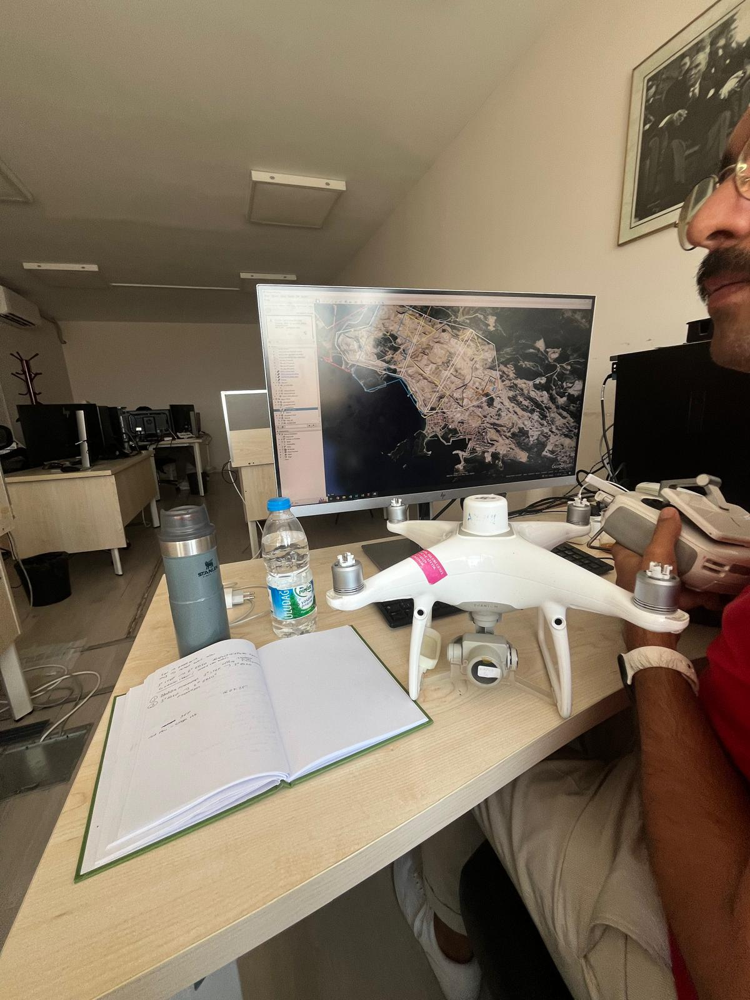

MAPEG
MAPEG, the General Directorate of Mining and Petroleum Affairs, is a public institution involved in regulating and overseeing activities related to mineral and petroleum resources in Türkiye.
During my internship, I participated in various field activities and visited different departments to learn how the institution operates. This experience gave me the opportunity to observe fieldwork and departmental workflows firsthand.
Institution website